Non applicable pour Pinpoint Standalone Light.
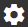
s'ouvre en cliquant sur l'icône Configuration dans la Barre d’action noire.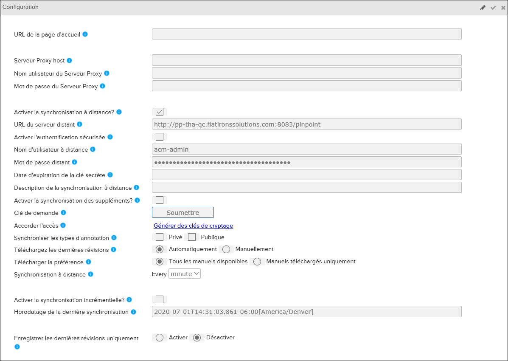
Volet de configuration - Pinpoint Standalone
Le tableau suivant décrit les composants possibles dans l'interface utilisateur:
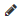 Éditer |
Le bouton Modifier. Cliquez sur ce bouton pour rendre le champ modifiable. |
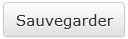 Sauver |
Le bouton Enregistrer. Cliquez ici pour enregistrer l'URL que vous avez entrée. |
| Annuler | Le bouton Effacer le texte. Cliquez sur ce bouton si vous souhaitez supprimer le contenu dans le champ. |
| URL de la page d'accueil | L'adresse de la page que vous souhaitez afficher en tant que page d'accueil. (http: // est nécessaire). |
| Serveur Proxy host | L'adresse du serveur proxy. (http: // est obligatoire). |
| Nom utilisateur du Serveur Proxy | Le nom d'utlisateur du proxy du serveur. |
| Mot de passe du Serveur Proxy | Le mot de passe du serveur proxy. |
| Activer la synchronisation à distantance? | La valeur par défaut a été désactivée. Sélectionnez cette option pour activer le Data Manager distant. |
| URL de serveur distant | L'adresse à la distant Pinpopint (http: // est obligatoire) Remarque : Après avoir
entré l'URL, ajoutez # / main à la fin de l'adresse, par exemple: http://[nom du
serveur]:[port]/pinpoint/#/main
|
| Activer l'authentification sécurisée | La valeur par défaut a été désactivée. Sélectionnez cette option pour activer l'authentification SAML. |
| Nom d'utilisateur à distantance | Le nom d'utlisateur du distant ACM. |
| Mot de passe distant | Le mot de passe du distant ACM. |
| Date d'expiration de la clé secrète | La date d'expiration de la clé d'accès (clé secrète). |
| Description de la synchronisation à distance | Optionnel. Saisissez une description pour la synchronisation à distance avec authentification approuvée. |
| Clé de demande | Cliquez sur le bouton Soumettre pour demander une clé
d'authentification approuvée (clé d'accès). Après avoir soumis votre demande, vous pouvez approuver votre clé d'accès dans Contrôle d'accès. Une fois la clé approuvée authentifiée, retournez dans le volet Configuration et enregistrez les détails. Les données la synchronisation commence peu de temps après. |
| Téléchargez les dernières révisions | Sélectionnez l'option de téléchargement des dernières révisions:
Reportez-vous à la section Affichage du statut sur l'import de publication pour plus d'informations. |
| Télécharger la préférence |
Remarque : Cette option n'est disponible que lorsque le téléchargement des dernières
révisions est défini automatiquement.
|
| Synchronisation à distance | Remarque : Cette option n'est disponible que lorsque le téléchargement des dernières
révisions est défini automatiquement.
Utilisez cette option pour définir
l'intervalle de synchronisation des révisions.
|
| Accorder l'accès | Remarque : Ce champ s'affiche lorsque vous activez les données. chiffrement dans Data
Manager et déchiffrement des données dans Pinpoint. Reportez-vous à "Configuration
du cryptage des données dans Gestionnaire de données pour Pinpoint" dans le
Flatirons Pinpoint Configuration Guide pour plus
d'informations.
Cliquez sur le lien Générer des clés de
chiffrement pour afficher Générer Dialogue de clé
secrète. Cette boîte de dialogue permet aux administrateurs de créer clés
secrètes et mots de passe principaux pour les utilisateurs. |
| Synchroniser révisions par défaut | La valeur de défaut a été désactivée. . Lorsque vous sélectionnez Activer. Pinpoint Standalone synchronise les métadonnées de \"révision par défaut\" pour chaque publication. La révision par défaut est définie pour chaque publication au niveau de l'organisation. Faire référence à . Gestion des publications. |
| Synchroniser les types d'annotation |
Cochez ces cases dans Pinpoint Standalone pour inclure la synchronisation des annotations de Pinpoint Viewer en ligne. La synchronisation s'effectue automatiquement au niveau du backend. Les utilisateurs ne peuvent pas voir la progression et ne peuvent pas se synchroniser manuellement. Pour chaque type d'annotation sélectionné pour être synchronisé, toutes les nouvelles modifications des annotations (ajoutées/modifiées/supprimées) effectuées après la dernière synchronisation réussie du côté en ligne de Pinpoint Viewer sont reportées. Cependant, tout ce qui est fait avec des annotations dans Pinpoint Standalone n'est pas synchronisé avec Pinpoint Viewer en ligne. Vérifiez le type d'annotation à synchroniser:
Remarque : Vous ne pouvez pas synchroniser les annotations des candidats publics.
|
| Activer la synchronisation des suppléments? | Cochez
cette case dans Pinpoint Standalone pour inclure la synchronisation des suppléments
de Pinpoint Viewer en ligne. La synchronisation s'effectue automatiquement au niveau
du backend. Les utilisateurs ne peuvent pas voir la progression et ne peuvent pas se
synchroniser manuellement. Pour chaque synchronisation, toutes les nouvelles modifications apportées aux pièces jointes (ajoutées/modifiées/supprimées) effectuées après la dernière synchronisation réussie sur le côté en ligne de Pinpoint Viewer sont reportées. Cependant, tout ce qui est fait avec des pièces jointes dans Pinpoint Standalone n'est pas synchronisé avec Pinpoint Viewer en ligne. Si le contenu du supplément de synchronisation? La case à cocher est désactivée mais l'option Activer la synchronisation à distance est activée, alors seul le contenu de la publication est maintenu synchronisé. |
| Synchroniser la modification locale Pinpoint |
Cochez cette case dans Pinpoint Standalone pour inclure la synchronisation des modifications locales à partir de Pinpoint Viewer en ligne. La synchronisation se produit automatiquement au niveau du backend toutes les 5 minutes. Les utilisateurs sont avertis dans l'onglet Autres de la page Détails d'importation lorsque la création a été synchronisée pour la dernière fois. Pour chaque synchronisation, toutes les nouvelles modifications apportées aux
modifications locales (ajoutées/modifiées/supprimées) effectuées après la dernière
synchronisation réussie du côté en ligne de Pinpoint Viewer sont transférées lors du
prochain événement de synchronisation planifié.
Remarque : Les modifications locales
effectuées dans Pinpoint Standalone ne sont pas synchronisées avec Pinpoint Viewer
en ligne.
Si la case à cocher Synchroniser les modifications locales Pinpoint est désactivée mais que l'option Activer la synchronisation à distance est activé, seul le contenu de la publication reste synchronisé. |
| Activer la synchronisation incrémentielle? | La valeur de défaut a été désactivée (décochée).
|
| Horodatage de la dernièresynchronisation | (Lecture seule) Ce champ affiche l'heure du dernier processus de
synchronisation. Lorsque l'option Activer la synchronisation incrémentielle est activée, elle récupère les publications supprimées ou mises à jour survenues après le dernier enregistrement horodatage de synchronisation. |
| Enregistrer les dernières révisions uniquement | Remarque : Cette configuration apparaît uniquement si le téléchargement la
fonctionnalité Dernières révisions est définie sur
Automatically télécharger les révisions. Vous devez avoir
toutes les autorisations sur le Peut activer / désactiver l'accès aux
révisions plus anciennes pour utiliser cette
fonctionnalité.
Sélectionnez l'option pour enregistrer les dernières
révisions:
|
URL de la page de destination et URL de la page de destination de l'organisation
Si vous définissez l'URL de la page de destination ou l'URL de la page de destination de l'organisation, la page d'accueil du client Pinpoint affiche la page de l'URL spécifiée dans un cadre iFrame. Cela signifie que tous les liens seront navigués à l'intérieur de ce cadre, le reste de Pinpoint autour du cadre restera statique. Le site chargé à partir de l'URL de la page d'accueil ne peut pas interagir avec Pinpoint.
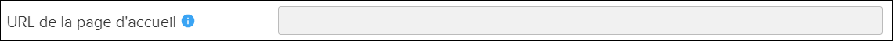
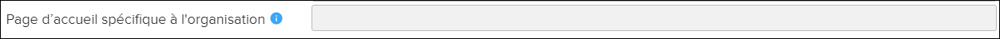
Lors de l'enregistrement, la page Web qui est définie remplacera alors le logo par défaut qui apparaît chaque fois Pinpoint est ouvert. Par exemple:
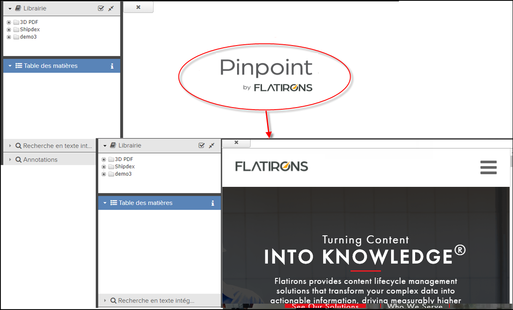
Lorsque vous naviguez dans Pinpoint, vous pouvez toujours revenir à la page d'accueil en cliquant sur le logo Pinpoint logo dans le coin supérieur gauche de l'application. Pour revenir au contenu que vous regardiez, cliquez sur le X dans le coin supérieur gauche de la page d'accueil.
Paramètres du serveur proxy
Lorsque le Pinpoint est utilisé dans un réseau qui nécessite un proxy pour accéder à Internet, vous pouvez configurer les paramètres de proxy HTTP pour se connecter au Data Manager central. Les champs de paramètres du serveur proxy vous permettent d'entrer les paramètres de l'host proxy, du nom d'utilisateur et du mot de passe.
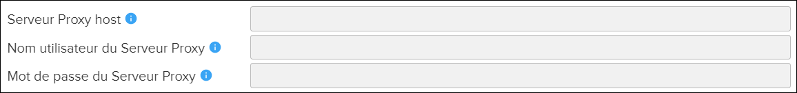
Paramètres de synchronisation à distance
Sélectionnez l’activation de la synchronisation à distance? Case à cocher pour activer la synchronisation à distance. Utilisez les champs pour saisir les paramètres du URL Pinpoint distante, nom d'utilisateur ACM distant et mot de passe ACM distant.
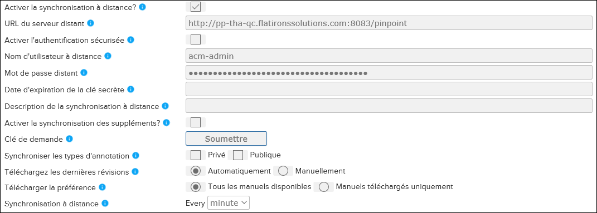
Activer l'authentification sécurisée
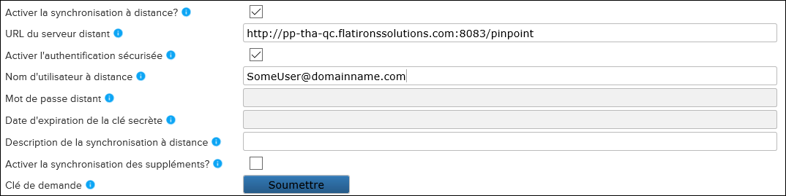
- Dans le champ Nom d'utilisateur distant, saisissez le nom
d'utilisateur.Remarque : Le nom d'utilisateur doit être entré exactement tel qu'il est dans le système et est sensible à la casse. Pour vous assurer que le nom d'utilisateur est correct, vous pouvez sélectionner l'utilisateur dans le pied de page en bas de l'écran pour afficher la boîte de dialogue À propos de Pinpoint Viewer ou ACM. Le nom d'utilisateur est répertorié sous ID utilisateur. Par exemple:

- Optionnel. Dans le champ Description de la synchronisation à distance, entrez une description pour la synchronisation à distance avec authentification d'application approuvée.
- Dans le champ Demande de clé, cliquez sur le bouton Soumettre pour demander une clé d'accès. Le client ACM s'ouvre dans une nouvelle fenêtre.
- Connectez-vous à ACM et approuvez votre clé d'accès dans le volet Détails de
l'utilisateur.Remarque : Vous ne pouvez approuver que votre propre clé d'accès.Voici un exemple du panneau Clé d'accès situé dans le volet Détails de l'utilisateur dans ACM:

Ce panneau vous permet de visualiser/approuver/renouveler/supprimer votre clé d'accès. Vous ne pouvez exécuter ces options que sur vos propres clés d'accès. Vous ne pouvez avoir qu'une seule clé d'accès.Reportez-vous à la rubrique Gestion des clés d'accès dans le Flatirons Access Control Manager User Guide.
- Après avoir approuvé votre clé d'accès dans ACM, revenez au volet de
Configuration et cliquez sur le bouton
Enregistrer pour enregistrer les détails. La date d'expiration
de la clé secrète et un message d'activation s'affichent. Par exemple:
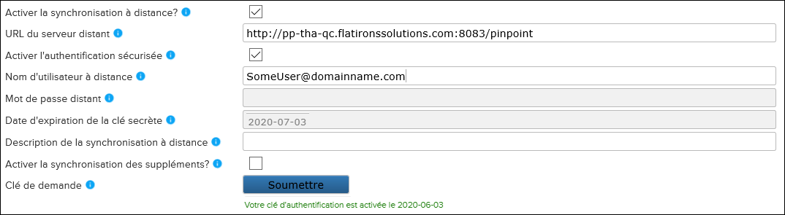
La synchronisation des données commence peu de temps après.
Annotations de synchronisation
Téléchargement des révisions
Ces options sont disponibles pour le téléchargement des révisions:- Automatiquement (par défaut)
Cette option télécharge les dernières révisions sans aucune intervention de l'utilisateur. Lorsque vous sélectionnez Automatiquement, vous pouvez spécifier l'intervalle de synchronisation à distance pour la synchronisation. Vous pouvez également spécifier la préférence de téléchargement :
- Tous les manuels disponibles (par défaut)
Synchronise toutes les publications / révisions autorisées. C'est le comportement actuel.
Remarque : La sélection de cette option peut avoir un impact sur les performances et occuper plus d'espace de stockage. - Uniquement les manuels téléchargés
Synchronise uniquement les dernières révisions. Ce ne sont que les révisions téléchargées pour une utilisation en mode hors ligne.
Remarque : Pinpoint ne synchronise la nouvelle révision des publications existantes que si vous sélectionnez cette option. Si la publication n'est pas en mode hors connexion, vous devez passer Manuellement pour sélectionner les nouvelles publications à synchroniser.
- Tous les manuels disponibles (par défaut)
- Manuellement
Sélectionnez cette option pour choisir les révisions à télécharger. Le nombre de publications disponibles au téléchargement s'affiche sur
 l'icône Présentation de l'importation de publications dans la
Barre d’action. Cliquez sur l'icône pour sélectionner les publications que
vous souhaitez télécharger.
l'icône Présentation de l'importation de publications dans la
Barre d’action. Cliquez sur l'icône pour sélectionner les publications que
vous souhaitez télécharger.
Accorder l'accès
Le champ Accorder l'accès s'affiche lorsque vous activez le cryptage des données dans le Gestionnaire de données. et déchiffrement des données dans Pinpoint. Reportez-vous à la section "Configuration du cryptage des données dans le gestionnaire de données pour Pinpoint" dans le manuel Flatirons Pinpoint Configuration Guide pour plus d'informations.
- Cliquez sur le lien Générer des clés de cryptage. La boîte de dialogue Générer une clé
secrète apparaît:
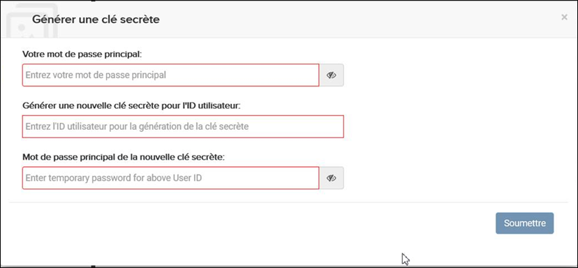
- Entrez votre mot de passe principal dans le champ Votre mot de passe
principal.Remarque : Sélectionnez l'icône
 pour afficher le mot de passe.
pour afficher le mot de passe. - Entrez une clé secrète pour l'utilisateur dans le champ Générer une nouvelle clé secrète pour l'ID utilisateur.
- Entrez un mot de passe pour la clé secrète dans le champ Mot de passe principal de la
nouvelle clé secrète.Remarque : Sélectionnez l'icône
pour afficher le mot de passe.
- Cliquez sur le bouton Soumettre.
- Utilisateur administrateur
Entrez votre mot de passe principal et cliquez sur le bouton Soumettre.
- Autres utilisateursTéléchargez le fichier de clé secrète, entrez votre mot de passe principal et cliquez sur le bouton Soumettre.Remarque : Après la première connexion, les utilisateurs doivent uniquement entrer leur mot de passe principal.
Paramètres de synchronisation d'annotation
Sélectionnez l’option Activer la synchronisation incrémentielle? case à cocher pour activer
la synchronisation incrémentielle.
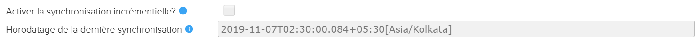
Par défaut, Activer la synchronisation incrémentielle? est désactivé (non coché). Lorsqu'elle est cochée, Pinpoint recherchera les publications supprimées et mises à jour à partir du Data Manager et évaluera uniquement ces publications. Il récupère uniquement les publications qui se sont produites après le dernier horodatage de synchronisation enregistré.
Contenu créé synchronisé
La notification indiquant que le contenu créé dans Pinpoint Viewer a été synchronisé avec
Pinpoint Standalone peut être consultée dans l'onglet Autres détails d'importation.
Reportez-vous à l'exemple e Autres détails d'importation.
Reportez-vous à l'exemple :
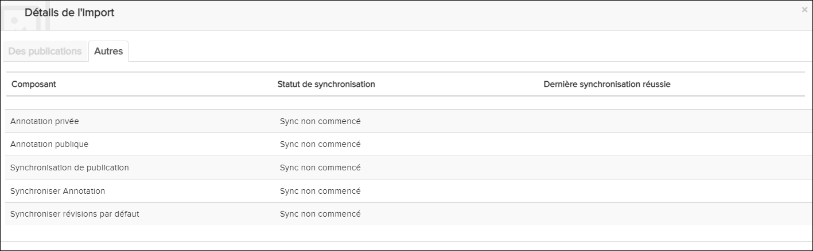
L'onglet Autres affichera l'heure et la date de la dernière action synchronisée. Une fois qu'une modification locale a été approuvée dans le visionneuse Pinpoint. Il faudra environ 5 minutes pour que le contenu créé se synchronise avec Pinpoint Standalone.
Paramètres de synchronisation d'édition locale
L'utilisateur de Pinpoint Standalone doit avoir le privilège Accès en lecture Peut modifier les détails du serveur distant activé dans ACM pour accéder à la section du volet Configuration dans Pinpoint afin que l'utilisateur puisse synchroniser le serveur Pinpoint avec Pinpoint Standalone.
Si une révision d'une publication a été publiée dans Pinpoint Viewer, le rapport de conflits doit être généré et résolu avant que les modifications locales des révisions précédentes puissent être synchronisées avec Pinpoint Standalone.
Seules les modifications locales dans un état approuvé seront synchronisées avec Pinpoint Standalone.
Si la configuration Télécharger les dernières révisions est en mode manuel, l'édition locale Pinpoint est toujours synchronisée avec la révision en cours. Pour les révisions supplémentaires, l'utilisateur doit les télécharger manuellement à partir du serveur.- Toutes les modifications locales dont le statut est approuvé.
- Toute modification OEM et COC après la fusion/résolution du conflit.
Enregistrer les dernières révisions uniquement
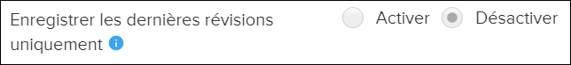
Par défaut, l'option Enregistrer les dernières révisions uniquement est désactivée. L'application télécharge et importe toutes les révisions. Sélectionnez le bouton radio Activer pour télécharger et importer uniquement les dernières révisions complètes (et toutes les révisions incrémentielles associées).
- Si vous activez Enregistrer les dernières révisions uniquement, les révisions précédemment supprimées ne sont pas importées. Pinpoint ne télécharge que les révisions ajoutées après avoir activé la fonctionnalité.
- Si vous désactivez l'option Enregistrer les dernières révisions uniquement, aucune révision n'est supprimée à moins que vous ne les supprimiez dans le Gestionnaire de données. Toutes les révisions précédemment importées sont conservées et ne sont pas supprimées de Pinpoint.